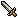

|
上级者秘传心法 ～补完篇～
◆ 天下一ワナ道会99F突破攻略 ◆
作者：kenyo
『风来人绝对领域』版权所有，禁无断转载！
～天下一ワナ道会99F限定出现道具种类一览～
 |
|
武器 |
|
|
| カタナ |
|
| 木づち |
|
| つるはし |
|
| こんぼう |
|
 盾 盾 |
|
| カラクロイドの盾 |
|
 腕轮 腕轮 |
|
| ワナしの腕轮 |
|
| あたらずの腕轮 |
|
| ワナあての腕轮 |
|
| 曲がりの腕轮 |
|
 草 草 |
|
| 药草 |
|
| 弟切草 |
|
 卷物 卷物 |
|
| もちかえりの卷物 |
|
| あかりの卷物 |
|
| ワナの卷物 |
|
| 大部屋の卷物 |
|
| おはらいの卷物 |
|
 杖 杖 |
|
| トンネルの杖 |
|
| ばいそくの杖 |
|
| ふきとばしの杖 |
|
| ばしょがえの杖 |
|
| クォ`タ`の杖 |
|
| いちじしのぎの杖 |
|
| せんこうだんの杖 |
|
| とびつきの杖 |
|
| ひきよせの杖 |
|
 壶 壶 |
|
| 回复の壶 |
|
| くうかんいどうの壶 |
|
F，ワナ，机关，将西林拉向死亡深渊的敌人之一，而将机关反过来利用便是天下一ワナ道会迷宫的特色。装备ワナしの腕轮期间，机关对自己无效而敌人反而受到伤害，看着敌人在机关的作用下任你摆布确是一大乐趣。西林可以拾起机关也可以改造机关，但是每层最多只会出现8种机关，而且出现种类随着迷宫层数而改变，在同一层改造机关时呈周期性改变，因此在开始游戏之前有必要先熟悉一下机关的规律，详见以下的机关周期性及层别分布表。
| 机关周期性及层别分布表 |
| 1～2F |
眠りガス→落とし穴→イカリ→ノロイバサミ→落石→毒矢→装备はずし→まるた→眠りガス |
| 3～5F |
バネ→地雷→召唤スイッチ→ノロイバサミ→サビ→まるた→回转盘→眠りガス→バネ |
| 6～8F |
装备はずし→ころび石→钝足→デロデロの汤→イカリ→ノロイバサミ→さび→落石→装备はずし |
| 9～11F |
ノロイバサミ→铁の矢→装备はずし→ころび石→眠りガス→地雷→ハラヘリ→けいほう→ノロイバサミ |
| 12～15F |
大型地雷→けいほう→召唤スイッチ→木の矢→落石→装备はずし→回转盘→钝足→大型地雷 |
| 16～17F |
デロデロの汤→召唤スイッチ→ノロイバサミ→毒矢→まるた→眠りガス→落し穴→地雷→デロデロの汤 |
| 18～20F |
落石→装备はずし→钝足→大型地雷→ハラヘリ→イカリ→召唤→さび→落石 |
| 21～23F |
落し穴→デロデロの汤→召唤スイッチ→ノロイバサミ→落石→毒矢→まるた→眠りガス→落し穴 |
| 24～27F |
落し穴→イカリ→ノロイバサミ→落石→毒矢→装备はずし→まるた→眠りガス→落し穴 |
| 28～31F |
地雷→召唤スイッチ→ノロイバサミ→さび→落石→まるた→回转盘→バネ→地雷 |
| 32～35F |
大型地雷→イカリ→ノロイバサミ→さび→落石→装浃悉氦贰回转盘→g足→大型地雷 |
| 36～39F |
ハラヘリ→警报装置→ノロイバサミ→铁の矢→落石→装备はずし→ころび石→眠りガス→ハラヘリ |
| 40～43F |
デロデロの汤→警报装置→召唤スイッチ→木の矢→落石→装备はずし→回转盘→钝足→デロデロの汤 |
| 44～47F |
デロデロの汤→召唤スイッチ→ノロイバサミ→落石→毒矢→まるた→眠りガス→落とし穴→デロデロの汤 |
| 48～51F |
大型地雷→ハラヘリ→イカリ→召唤スイッチ→さび→落石→装备はずし→钝足→大型地雷 |
| 52～55F |
落し穴→デロデロの汤→召唤スイッチ→ノロイバサミ→落石→毒矢→まるた→眠りガス→落し穴 |
| 56～59F |
落し穴→イカリ→ノロイバサミ→落石→どく矢→装浃悉氦贰まるた→眠りガス→落し穴 |
| 60～64F |
地雷→召唤スイッチ→ノロイバサミ→さび→落石→まるた→回转盘→バネ→地雷 |
| 65～69F |
大型地雷→イカリ→ノロイバサミ→さび→落石→装备はずし→回转盘→钝足→大型地雷 |
| 70～74F |
ハラヘリ→警报装置→ノロイバサミ→铁の矢→落石→装备はずし→ころび石→眠りガス→ハラヘリ |
| 75～79F |
デロデロの汤→警报装置→召唤スイッチ→木の矢→落石→装备はずし→回转盘→钝足→デロデロの汤 |
| 80～84F |
落し穴→デロデロの汤→イカリ→召唤スイッチ→ノロイバサミ→さび→まるた→眠りガス→落し穴 |
| 85～89F |
大型地雷→ハラヘリ→イカリ→召唤スイッチ→さび→落石→装备はずし→钝足→大型地雷 |
| 90～94F |
落し穴→デロデロの汤→召唤スイッチ→ノロイバサミ→落石→装备はずし→まるた→眠りガス→落し穴 |
| 95～98F |
回转盘→钝足→警报スイッチ→イカリ→召唤スイッチ→召唤スイッチ→ノロイバサミ→ノロイバサミ→回转盘 |
1～5F
在1～2F主要收集“机关之元”（ワナのもと），3～5F则使用升级秘法狂升级，运气好的话应该可以升到LV25以上，可为以后的冒险打下坚实的基础。
6～11F
这几层收集道具是重点，利用机关ころび石令敌身上的道具掉出，可以收集到很多对以后冒险极有帮助的杖、饭团、卷物、壶等等。不过由于还没有あたらずの腕轮，所以只能在各个房间的路口都设置一些，待一段时间后再回去整理，比较耗费满腹度。由于7～9F有个扔炮弹的家伙ウルロイド出场，所以推荐10～11F才使用“暗黑十字架”高级技巧来收集道具。这里随便说一下，イカリのワナ虽然是令敌全体发怒的负面机关，但那是怪物踩中时的效果，如果将其设置在怪物不易经过的地方，比如靠墙边，而西林自己选择ふむ指令踩的话就可保持攻击力2倍的状态10回合哦！
12～20F
虽然12～15可以使用升级秘法提升LV，不过由于有デブ`チョ和いやしウサギ出现，一旦让它们升级肯定使你麻烦不断，建议还是不要恋战的好。16～20F的怪物用地雷通杀即可。
21～27F
这几层搜索あたらずの腕轮是重点，不过还要看你的运气，如果收集不到，以后的冒险将会困难重重。浮空系的ギャドン出现对身上的众多杖构成很大的威胁，如果实在找不到あたらずの腕轮，建议一进入该层就先设置个落穴，一遇上ギャドン就踩上落穴逃跑；或者将身上的所有杖都放到地上再开始探索，多用睡眠瓦斯来协助战斗，打不过就踩落穴逃跑啦。
28～30F
可以配合地雷使用升级秘法提升LV，不过由于有浮空系的みっこくバエ出现，没有あたらずの腕轮建议放弃练级。
31～33F
デブ`トン出现，这几层托它的福，大家可以品尝到被石头痛砸的滋味，多在路口设置地雷，遇见デブ`トン后往相反方向逃跑，实在不行就惟有用回复之壶回复再跟它血拼了。
34～35F
エビルカンガル`出现，2倍速的怪物四处狂奔……多在路口等怪物必经之路设置大型地雷一般处境不会太危险，此外，子供战车也有登场，与其作战不能在房间内，而是将其引到窄道内解决，况且它的经验值有1800点之多，可多杀几个来练级。
36～39F
这4层可以设置ころび石，可进行第2次道具补给。如果还没有あたらずの腕轮，尽量多花点时间利用ころび石尝试能否得到，运气好的话商店内也有卖的，不然以后的冒险你绝对步履艰难。由于36～37还有子供战车出现，建议在38～39F才采用“暗黑十字架”的高级技巧。不过这个技巧对浮空系怪物みっこくバエ无效，如果你未入手あたらずの腕轮的话……
随便再提供一个没有あたらずの腕轮也可令浮空系怪物受到机关伤害的技巧，方法是准备一个空间移动之壶，待浮空系怪物走到机关上时向其投掷就可启动机关了。不过要注意的是，空间移动之壶在该层只能存在一个，而且必须有使用次数。此外，用ワナあての腕轮也可以启动机关，当房间内有复数的机关存在时，投掷时会启动离自己最近的那个机关，个人感觉还是あたらずの腕轮最好用。
40～49F
从现在起就默认你已经入手あたらずの腕轮了，还未入手的麻烦请重新开始玩，死撑下去只会使你更加痛苦，如果你一意孤行我也没有办法……
44～47F这几层如果想练级，在窄道内设置睡眠瓦斯并配合あたらずの腕轮杀敌，几乎毫发无损就能入手大量EXP，只要饭团足够就行，而对于直接攻击无效的みかわしせんにん则用デロデロの汤即杀。因为这个阶段每层都可以设置即死系的机关，除非出现大部屋版怪物房间，一般来说都不是太难对付。不想练级就设置落穴逃跑算了，不过建议应尽快让HP上限达到250才会增大以后的生存几率。48～49F如果持有ワナの卷物可增加机关并利用召唤器和大型地雷来练级。
忠告：あたらずの腕轮和ワナしの腕轮来回切换的频率非常高，所以要时刻紧记身上装备的是哪一个腕轮，笔者犯过好几次弱智低级错误，装备了あたらずの腕轮却以为是ワナしの腕轮，踏中了自己设下的睡眠瓦斯、回转盘，被闻风而来的怪物群殴致死……
50～59F
呼，捱过一半了，只剩半条命了？呵呵，以前只不过是热身，真正的地狱还没出现呢。这以后的阶层机关出现数比较少，身上最好持有1～2个机关之元备用，而且要步步为营，多用つるはし在窄道内掘开1格墙壁并设置机关建立据点。
在50～55F注意透明的ホムルデ`モン，这个阶段你祈祷不要遇上怪物房间啦，但事实并非如你所愿，我打10次有7次都在50～52F遇上至少1次大部屋版怪物房间，出现确率非常高，我简直怀疑是CHUNSOFT故意这样搞的。不幸遇上时没什么可想的，尽快用とびつきの杖向楼梯方向突进并用ばしょがえの杖与最接近楼梯的怪物交换位置，不然就等着收尸吧。在50～51F可使用技巧收集3～4个“油细鸡肉”，带2个在身其他全部吃掉。52～59F一进入该层应尽快找到机关并改造成落穴踩踏逃跑，这以后出现的怪物实力很强，被怪物摸一下都会损失惨重，尽量避免“直接对话”，以高速潜行的方式前进。
60～66F
爆弹暴风雨！ベアボ`グ是这几层难缠的怪物，一旦进入它的射程范围它就会不断投掷炮弹，真是可恶！多在路口设置地雷和回转板并尽快找到楼梯逃跑才是上策，此外要注意的是だいふんかウニ，它一见到西林就马上跳到西林身边并启动爆发装置，之后4回合就会爆发，只要带它走3回合，并用ふきとばしの杖将它吹飞就能避免爆发对你造成的伤害啦。
67～69F
没有太特别的难缠怪物，用大型地雷通杀即可。
70～79F
暗黑地狱第一阶段，投篮高手ノコギガッタ`倾情演出，尽情表演其精湛的投篮技术，更要命的是这个阶段出现怪物房间的几率也非常高。遇上ノコギガッタ`时若还未设置好机关，只能先用いちじしのぎの杖来暂时回避，尽量应节约使用杖，因为地狱的路还很长的……
在70～74F进行最后一次道具收集，我在这里就收集到了比较罕贵的クォ`タ`の杖，不过由于有きゅうめいうさぎ出现，对敌使用后它会马上瞬移过来回复，所以这个杖建议留到95F以后再用。
デビルカンガル`在76～79F助战，2倍速兼发怒状态的怪物绝对是大敌，推荐用つるはし掘开1格墙壁并设置3个即死系的机关建立据点来对付，就算遇上怪物房间被发怒的ノコギガッタ`扔过来N多的怪物也不用怕，不过要注意的是被怪物砸多了あたらずの腕轮会破裂的，所以最好能预先收集多一个备用。
个人感觉这个阶段只要不是遇上怪物房间就不难对付，只要一进入该层能够尽快建立据点设置即死系机关，几乎不费吹灰之力就能将所有的怪物通杀。
80～89F
暗黑地狱第二阶段，这里堆满了无数风来人的尸骸，罪魁祸首就是ワナ道中最为恐怖的特级杀手メチルサタン，浮空、透明且2倍速行动，魔法乱反射，几乎身上所有的道具对它都无效，CHUNSOFT赋予给它的能力太强了！80～84F还好过一点，可以进入该层就尽快设置落穴逃跑；85～89F就真的要人命了，万一在房间内遇上绝对令你束手无策，欲哭无泪，就算你用光所有的回复之壶也未必能杀掉它。对付它没有太好的方法，一般常用的就是建立据点之后，停留在据点内利用即死系的机关杀掉2个以上メチルサタン时再出去搜索楼梯，一旦不幸在房间内遇上，一边用回复之壶回复一边退到窄道里，确认其方向后，将“油细鸡肉”向它投掷，或用いちじしのぎの杖向其投掷，如果附近有地雷，选ふむ指令踩踏地雷将它炸死，这些方法都可以解除危机。
这一阶段同样惧怕的是大部屋版怪物房间，不幸遇上几乎等于判了你死刑，节哀顺变吧……
90～98F
暗黑地狱最终阶段，逃亡生活完结篇！
90～94F可以设置落穴逃跑，不过如果成功建立据点后，就算有怪物房间存在，也可以毫发无损就能轻松歼灭整个怪物军团。推荐在中间设置睡眠瓦斯，周围2个设置“装备解除”，如下图所示。目的是当スカイドラゴン走到斜角位置时射箭启动“装备解除”封印其特技，防止它喷射龙之炎对你造成伤害。你可能会说在这个阶段杀敌练级已经没有意义，设置即死系的机关就可以了，不过我要的就是在这里屠杀高级怪物的那种爽快感，那种巨大的快感只有你亲自体验过才会明白。随便说一下，在90F得到カラクロイドの盾的几率比较高，通常是杀掉スカイドラゴン得到，或是怪物房间内出现，强烈建议大家不要错过这个盾，这样就算以后被偷袭也不致于会伤得那么严重。
|
|
| ▲杀掉条天空龙后竟然掉出个盾，终于能够结束无盾的生涯了，超泪！ |
▲不幸遇上怪物房间，为了再收集个盾，我决定大开杀戒。 |
|
|
| ▲还好刚才已经把据点完善了，嘿嘿。 |
▲封印天空龙的特技就不用怕它的龙炎啦。 |
麻烦的是，95F以后不再有即死系的机关出现，デビルカンガル`的助战使ヘルギャザ`成为继メチルサタン之后第2个顶极杀手，这种场合只能按下图所示的方法设置回转盘来暂时死守，趁怪物混乱之机伺机屠杀，最后循着怪物的来路干掉デビルカンガル`才能真正解除危机。
同样地，这一阶段的大部屋版怪物房间也异常的恐怖，当怪物的包围圈逐渐缩小之时，你就会真正理解“绝体绝命”的含义……
|
|
| ▲一开始的机关还比较少，暂时设置个回转盘顶住先。 |
▲这样设置就完善了，就算发怒兼2倍速的怪物都不用怕，不过还是掘开墙壁的那种设置更为安全。 |
kenyo语：以下是笔者快速破关的一个成绩，只重速度不重番付点数，相信这种记录还是会给众多高手所破的。
<<<<<< [Page1]
[Page2] 【Page3】 [Page4]
>>>>>>
|